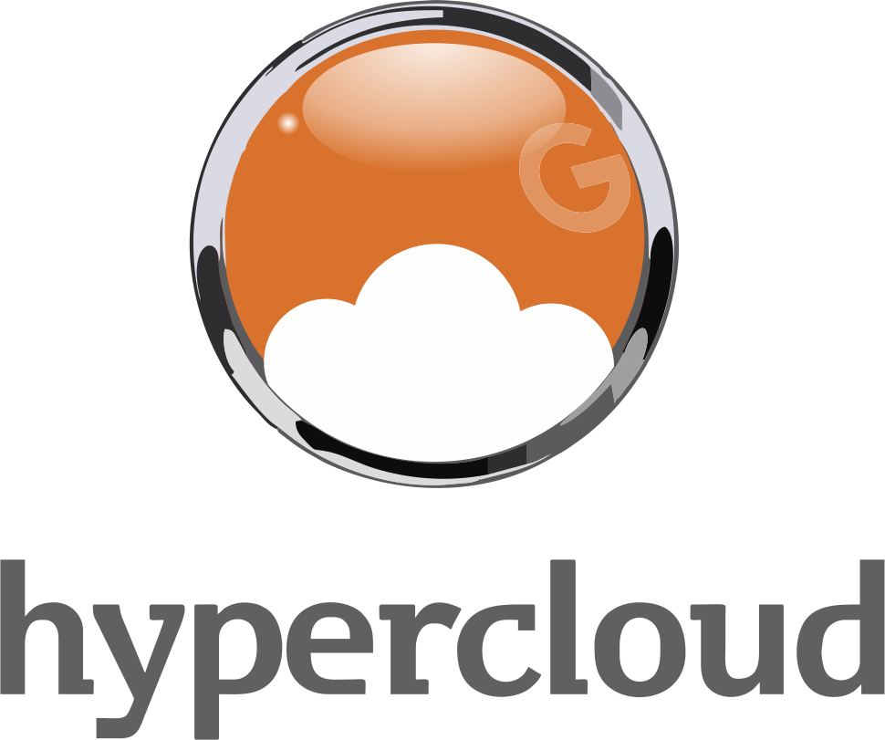

Assets e ecossistema
A marca Hypercloud e as credenciais Google agora aparecem com mais peso.
Usamos logos oficiais da Hypercloud e badges reais do ecossistema Google para reforçar reconhecimento, consistência e maturidade institucional em toda a jornada do site.
Logo institucional horizontal usada nas áreas principais de navegação e rodapé.

Versão vertical da marca para blocos de apoio visual e reforço institucional.
Credencial oficial incorporada à experiência como prova visual de parceria.
UI
Visual institucionalLeitura mais clara
GP
Parceiros GoogleBadges oficiais
SP
Setor PúblicoÁrea preservada e fortalecida
Logo oficial Hypercloud
Credenciais Google reais
Experiência em fundo claro
Comparação de serviços
Setor Público fortalecido